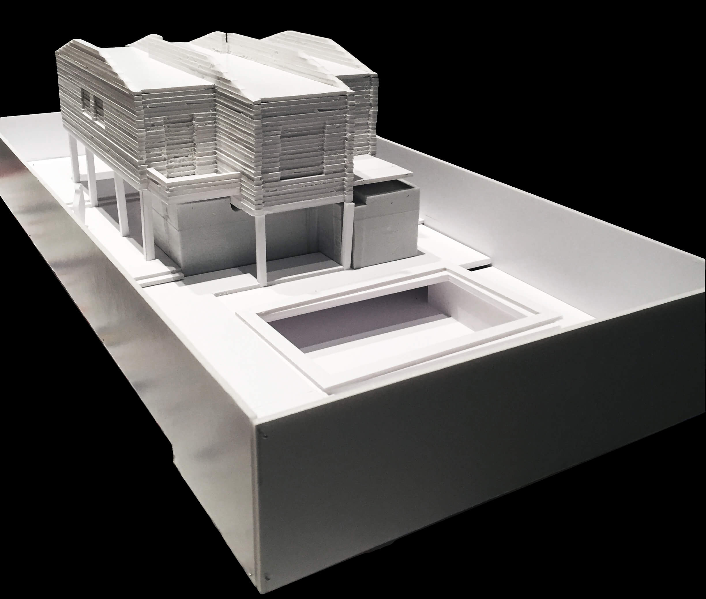
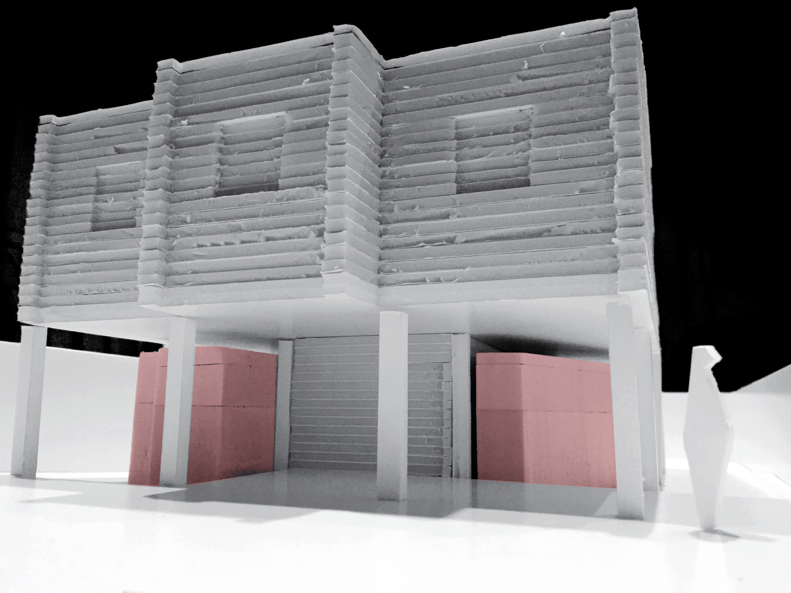
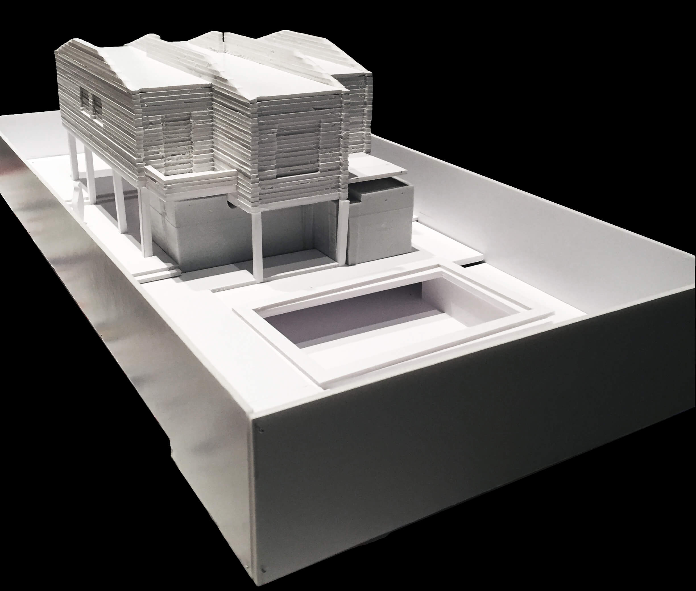
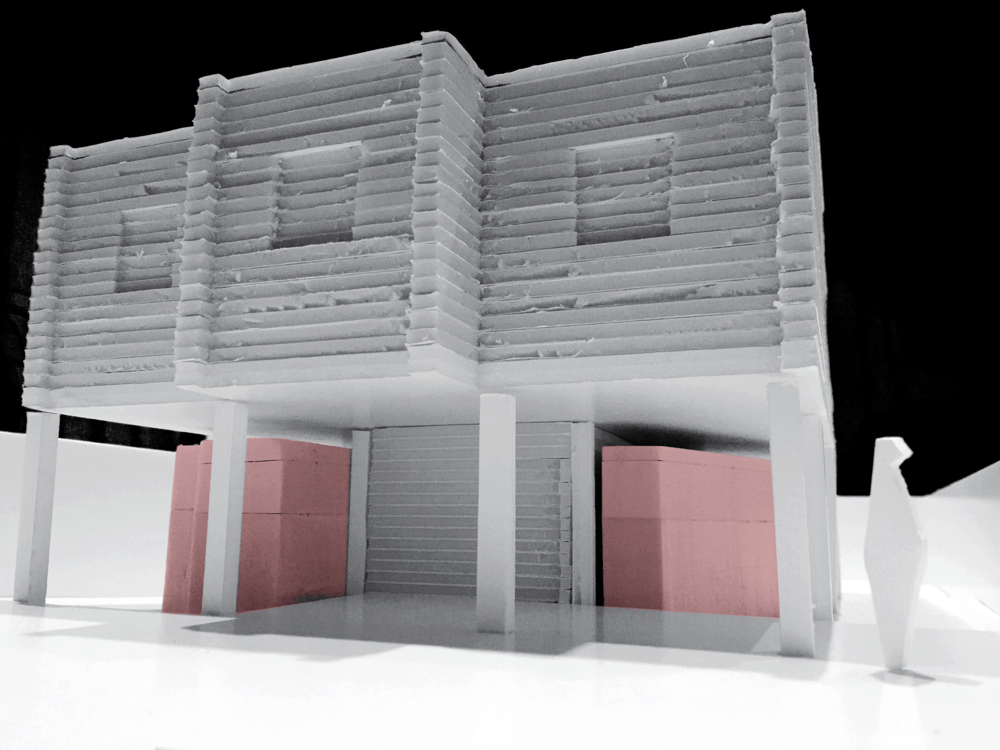

Reforma y ampliación de vivienda unifamiliar aislada en Tomares. Sevilla. 2017
Se amplía una vivienda preexistente originaria de los años 80 que se elevó en planta alta dejando libre la baja a tal efecto. La propuesta tendrá que resolver tanto la nueva relación entre ambas como de éstas con el espacio libre común de la parcela y los accesos a la misma.
Los cerramientos de la vivienda visibles desde el exterior consisten en paramentos de ladrillo de taco sin revestir y alojan en los huecos carpinterías metálicas provistas de celosías correderas igualmente metálicas. La nueva ampliación que se verá cubierta por este volumen habrá de integrarse tanto en proporciones como en cuanto a la materialidad y el tono de dicho volumen. A partir de aquí entra en juego la madera: de fuera adentro, una fachada ventilada a base de listones de madera colocados en horizontal que se desmarcarán lo suficiente del preexistente pero mezclarán también en la imagen exterior general del conjunto creando una nueva unidad. Su envejecimiento con el paso del tiempo diferenciado por orientación sumará texturas y tonalidades a las fachadas heterogéneas de fábrica.
La estructura a base de elementos contralaminados, aislada por el exterior tanto térmicamente como contra el paso del aire, permitirá reducir al máximo los puentes térmicos y junto con las carpinterías exteriores a base de perfiles de madera y doble acristalamiento permitirán certificar la ampliación según el estándar Passivhaus. Utilizaremos el volumen de planta alta como protección para reducir las ganancias solares facilitando la baja demanda energética de la nueva construcción.
La ampliación encuentra su sitio entre los pilares existentes. En el interior continúa la madera. Los acabados de los techos mediante elementos prefabricados y un mueble vertebrador que aloja los servicios, tanto húmedos como de almacenamiento, configuran el espacio. Este elemento compacto y colocado perimetralmente conduce por el espacio máximo liberado de los 70m2 disponibles para los futuros usuarios.

 


